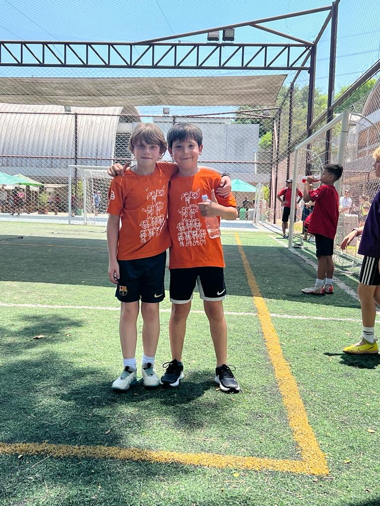

Gerando sua melhor versão
Bem vindos ao aniversário do Bruno e do Pietro!
12 anos!!

TORNEIO BP12
🏆
1º minuto X1 / 2º minuto X2
3º minuto X3 (Vitória 3 pts) Derrota (1)
3 ou 1
pts
kings League
Little Box
1 a 5
pts
Torneio
de Falta
Monte seu time e some o maior
número de pontos para ser o time de
maior qualidade técnica da Turma
Gol = 1; Trave/Travessão + gol = 2
Cor = 3; Alvo = 5 pontos
Voleio + gol = 2
Bike + Gol = 4
1 ou 4
pts
Skills Game
Voleio e Bike
1 a 3
pts
Penalties Cup
Cada gol 1 ponto
Cada time participa dos desafios
escolhendo quem é o Star Player
(pontuação dobrada)
1 a 4
pts
Controlar a bola da máquina no
espaço 1 ; gol +1; alvo +2
Controle de Bola
e Chute a Gol
10
pts
Old school
caixote
1 vitória, 10 pontos
para a equipe
MATRÍCULAS ABERTAS